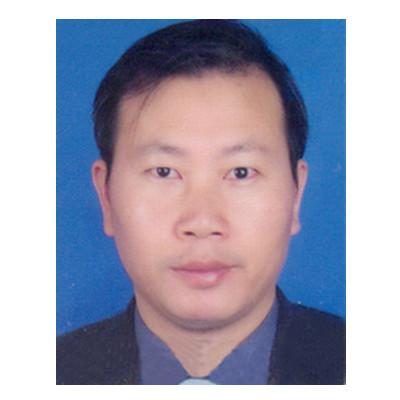
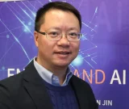
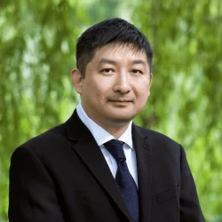

Clean Energy and Air
Pullution Conference
Pullution Conference
1st - 4th, August, 2024
The University of Hong Kong, Hong Kong, China
The University of Hong Kong, Hong Kong, China
| Home | Registration | Program | Directions | committee |
Clean Energy and Air Pollution Conference is a conference organized by graduate students and collaborators from the Clean Energy and Air Pollution Lab, led by Prof. Dennis Leung. The conference aims to bring together graduate students and researchers working in the field of clean energy and air pollution.
The conference will feature talks and presentations focused on various aspects of clean energy and air pollution, including research findings, technological advancements, and policy implications. Graduate students from the lab and other collaborating institutions will present their work, and there will also be plenary talks from invited speakers who are experts in the field.
To attend the Clean Energy and Air Pollution Conference, registration is required. The registration fee is 500 HKD for providing attendees a sumptuous dinner. If you are interested in presenting your research at the conference, you can submit an abstract through the registration page. The deadline for abstract submission has been extended to July 31th.
For any inquiries or questions, please contact Dr. Pan at wdpan@connect.hku.hk. We look forward to your participation in the Clean Energy and Air Pollution Conference!

|
|  |
|  |
|  |
Clean Energy and Air Pullution Conference is being organized by these Lab alumni: Prof. Meng Ni (Lead Organizer) and Prof. Jin Xuan (Lead Organizer), Prof. Huizhi Wang, Dr. Wending Pan, Dr. Yingguang Zhang.

|

|

|